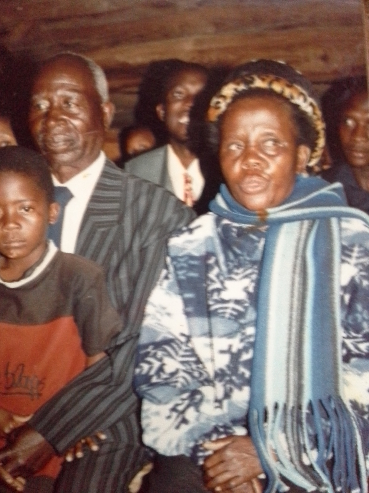

The Irimayi Magondo is more than just a family name — it’s a legacy. It began with our beloved grandparents, Sekuru naMbuya Magondo, whose strength and love planted the roots of a family tree that continues to grow strong and proud.
Though his children took on different surnames — Irimayi and Magondo — we remain one close, united family. A tribe of love, resilience, and deep connection. Sekuru and Mbuya Magondo had 10 children, and though some have passed on, 6 sons still live, surrounded by children and grandchildren who carry on the family spirit.
Today, the family spans over three generations with more than 30 beautiful souls. We celebrate not only life, but the power of staying together. Every New Year, the entire family travels, gathers, eats, dances, takes photos, and most importantly — reconnects. These are the memories we preserve here.
“Tinomira pamwechete. Takasimbiswa nerudo.”
— We stand together, strengthened by love.